Glazed Wild Rice Stuffed Portobello Mushroom | Oil-Free
This dish goes together and cooks quickly. The “preparation” list down below may look long and complicated, but don’t let that fool you. You know me–I love to explain in detail what to do and what to watch for. Be sure to read through the whole recipe before starting; then it will come together quickly for you, too.
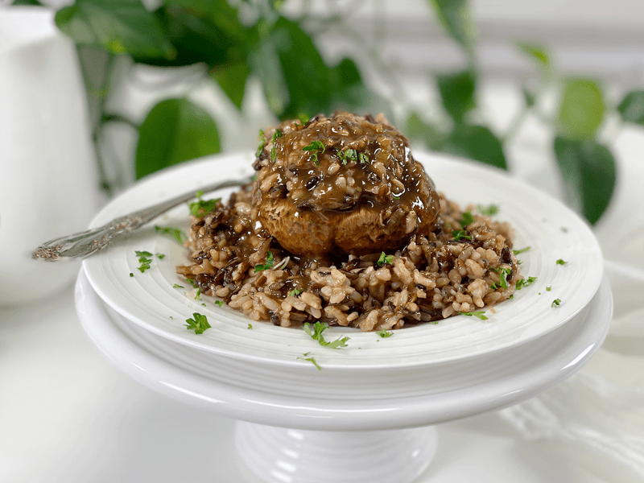
I have three great lessons in my Reference Library that talk about How to Read and Tackle a Recipe, Mise en Place (everything ready), and The Value of Tasting as You Go. When you have time, I highly recommend reading through them. There are a lot of valuable lessons tied up in those posts.
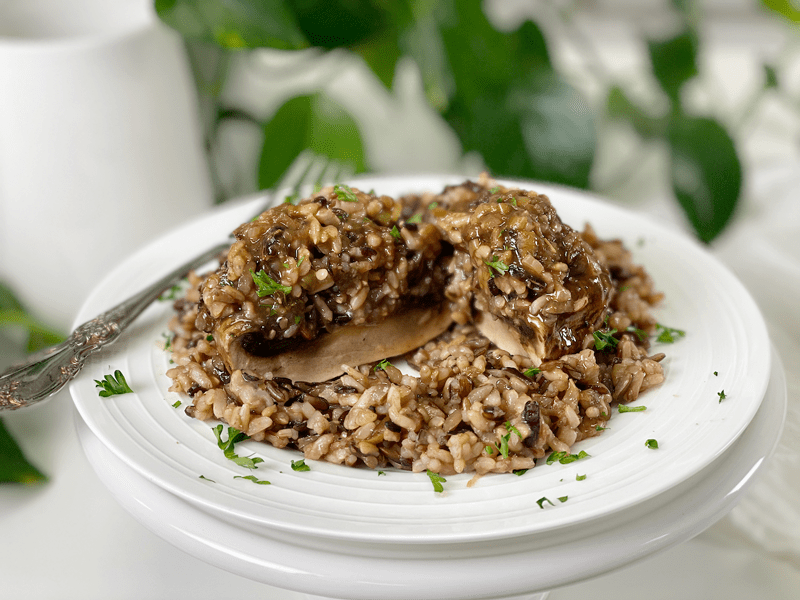
Ingredient Run-Down
Portobello Mushrooms
- These mushrooms add a “meatiness” to the dish.
- If you are unfamiliar with portobello mushrooms, I am referring to the ones that are about the size of your palm.
- Portobello mushrooms are large, dark-brown mushrooms that have an open cap, with visible, deep brown gills on the underside. Unlike its younger counterpart, the portobello has had more time to grow, causing it to lose more of its moisture. Portobello mushrooms are not as watery as cremini and have a slightly more pronounced mushroom flavor.
- For this recipe, it’s not necessary to remove the gills from portobello mushrooms before you use them. Other recipes may suggest doing so because the dark gills share their color with everything they touch and will discolor (turn black) any stuffings, sauces, and salad dressings that accompany the mushrooms in the recipe.
- If you have small button-sized mushrooms on hand, use those.
White Chickpea Miso
- I use Miso Master Organic Chickpea Miso, which I can readily purchase from our local grocery store. It is unpasteurized; therefore, you can find it in the refrigerated section of the store. It has a shelf life of about 18 months.
- It is soy-free, using garbanzo beans (chickpeas) instead of soybeans as its base.
- It has less salt than traditional miso, with a mild salty-sweet taste, giving a dish that fermented umami-rich edge.
- Chickpea miso is an excellent source of zinc, vitamin K, copper, and manganese. Because of the fermentation, it also provides loads of beneficial bacteria for the digestive system.
Balsamic Vinegar
- Balsamic vinegar is a very dark, concentrated, and intensely flavored vinegar originating in Italy, made wholly or partially from grape must. It adds a nice rich, slightly sweet flavor to the dish, which pairs wonderfully with miso.
- Top-quality balsamic vinegar is labeled as aceto balsamico tradizionale, indicating that the traditional methods from Modena have been used in the processing and aging of it. For most balsamic vinegar, you will get what you pay for; expect a top price for the best. If the price is very inexpensive, there might be sulfites added to the vinegar as a preservative. Grape Must —should be the first ingredient listed.
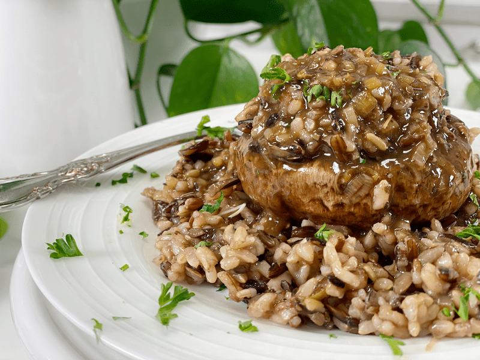
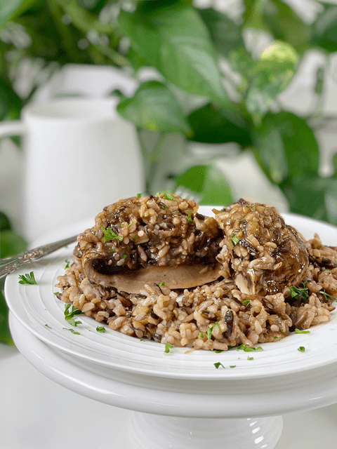
Ingredients
- 4 small-medium portobello mushrooms, stems removed
- 1/4 cups diced green onion
- 1 tsp minced garlic cloves
- 1 cup vegetable broth or water
- 3 Tbsp balsamic vinegar
- 1 Tbsp chickpea miso
- 1 tsp dried thyme
- 1/2 tsp dried basil
- 2 cups wild rice blend
- Clean the mushrooms with a damp, lint-free cloth and remove the stems. Set aside.
- Heat a large skillet pan over medium-high heat. Drop some water on the pan to see if it is hot enough to start sautéeing.
- You know it’s ready when the water creates a mercury-like-ball shape that moves around the pan.
- Add the diced onion and minced garlic, cooking for roughly 2 minutes.
- Keep the onions moving so nothing sticks. Add more water as needed, so the foods don’t stick to the pan.
- Be watchful that the garlic doesn’t burn, or it will impart a bitter taste to the dish.
- Once the onions are translucent, add the vegetable broth, balsamic vinegar, chickpea miso, thyme, and basil. Stir together until the miso is fully incorporated.
- If you don’t have vegetable broth, water can be used, but it won’t be as flavorful.
- Miso is salty, which is why I didn’t add additional salt to the ingredient list. Some brands are saltier than others, so taste-test it so you understand the ingredient you have in front of you.
- You can use 1 Tbsp of fresh herbs as a substitute for the dried version. To learn more about How to Use Herbs (fresh or dried) in recipes, click (here).
- Place the mushrooms in the pan, cover, and cook over medium heat for 5 minutes. Remove the lid, flip the mushrooms, and spoon some of the cooking liquid over the tops. Repeat this whole process until the mushrooms are fork-tender.
- If the cooking liquid is reducing too quickly, it’s a sign that your heat is too high. Add more vegetable broth, reduce the heat, and continue.
- If the mushrooms are sticking to the pan, that’s another sign to reduce the heat.
- The whole cooking process should take about 30 minutes. The larger the mushrooms, the more time it will take to cook.
- Once the mushrooms are fork-tender, push them to the side of the pan. Remove about 1/2 cup of the cooking liquid (set aside). Add the cooked wild rice blend to the pan and stir it around. We are doing this to reheat the rice and for any leftover sauce to be absorbed into the rice for more flavor.
- Plating Options
- For immediate plating: Place a scoop of rice in the center of the plate, add 1-2 mushrooms (depending on the size), top with a large spoonful of rice, and drizzle the cooking liquid over the top. Garnish with minced fresh herbs.
- For future plating: If you don’t plan on serving right away, pull out a small baking dish (one that will fit all the mushrooms side by side). Place a layer of rice on the bottom, add the mushrooms, and top each mushroom with more rice. Keep the sauce in a separate container. When ready to eat, reheat in the oven set at 350 degrees (F) for about 15 minutes or until warmed through. About 5 minutes before removing from the oven, drizzle the cooking sauce over the dish. Enjoy!
-
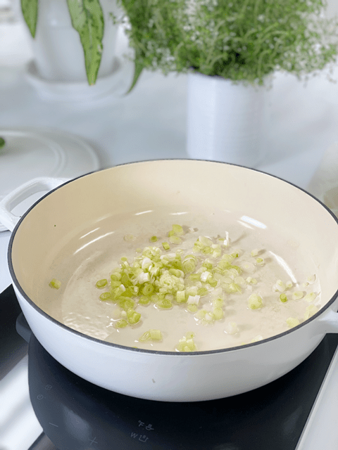
-
Water sauté the onions and garlic.
-
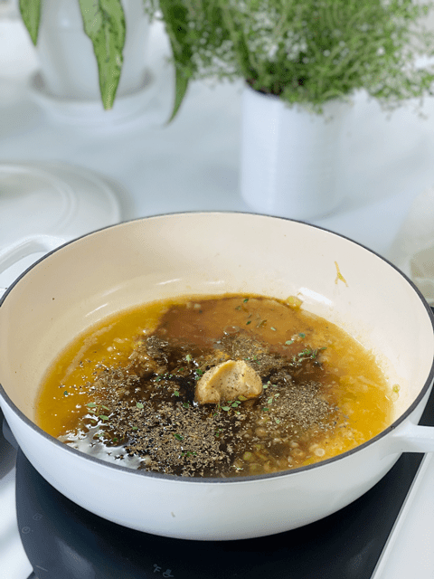
-
Add the remaining ingredients, cooking until the miso is thoroughly mixed in.
-
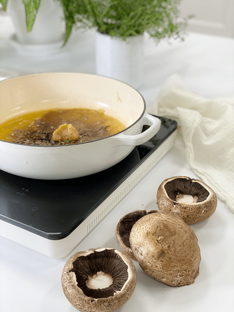
-
Add the mushrooms.
-
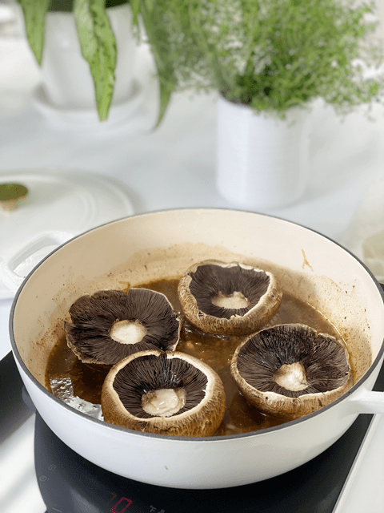
-
I started with the mushrooms cap-side down. Cook for 5 minutes.
-
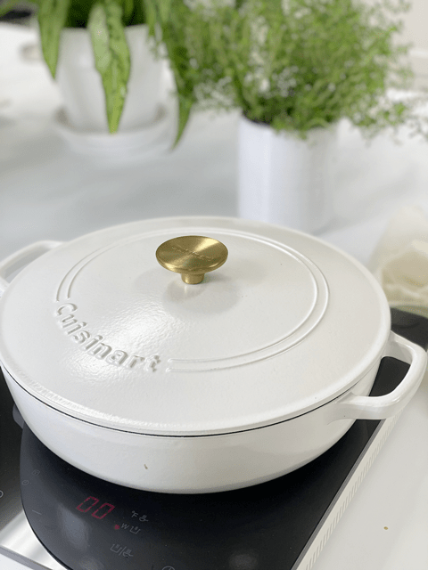
-
Always keep the pan covered while cooking to reduce epavoration of the sauce.
-
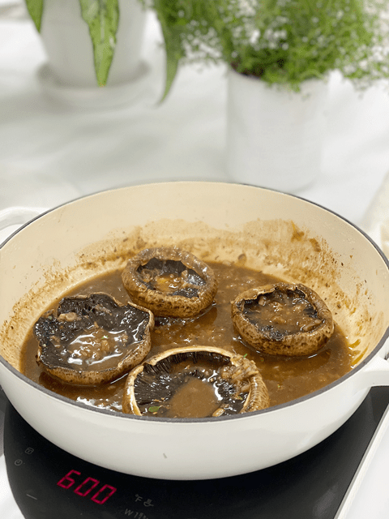
-
Every 5 minutes turn the mushrooms over and spoon the glaze over them.
-
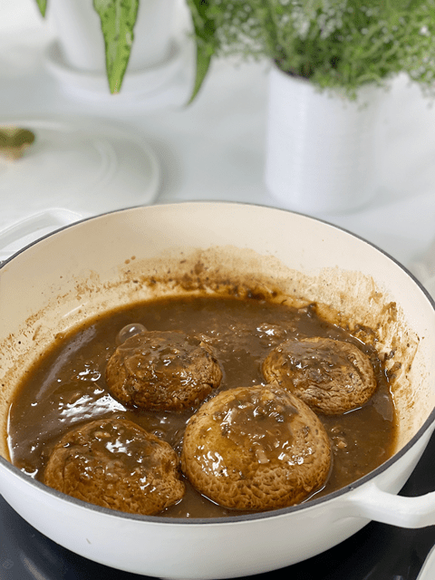
-
Cook until the mushrooms are fork-tender.
-
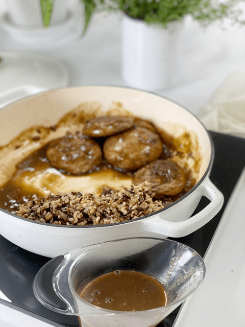
-
Remove most of the glaze, setting it aside. Add the rice so it can warm and soak up any remaining sauce.
© AmieSue.com